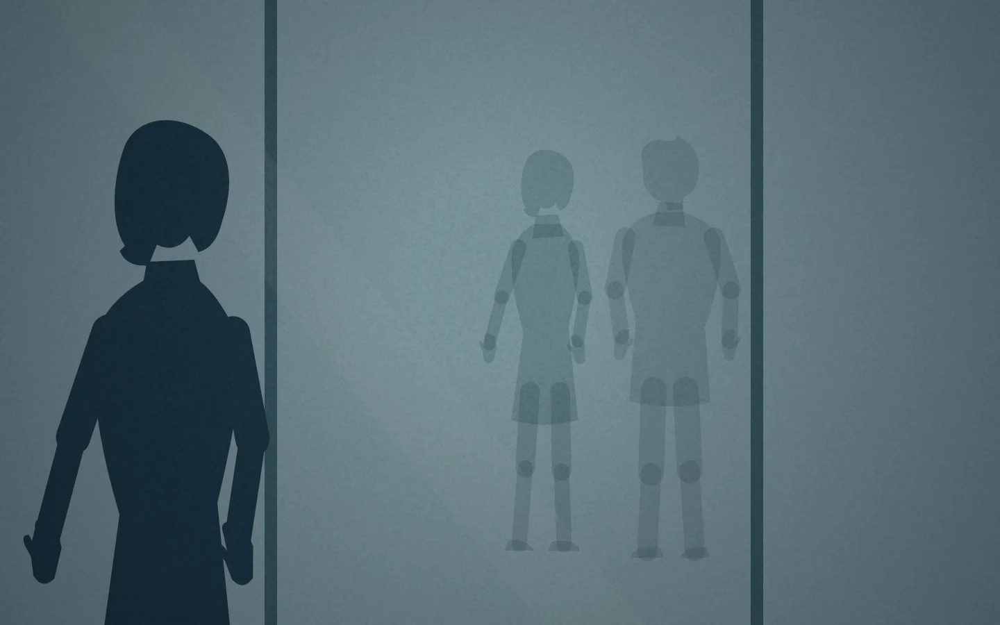
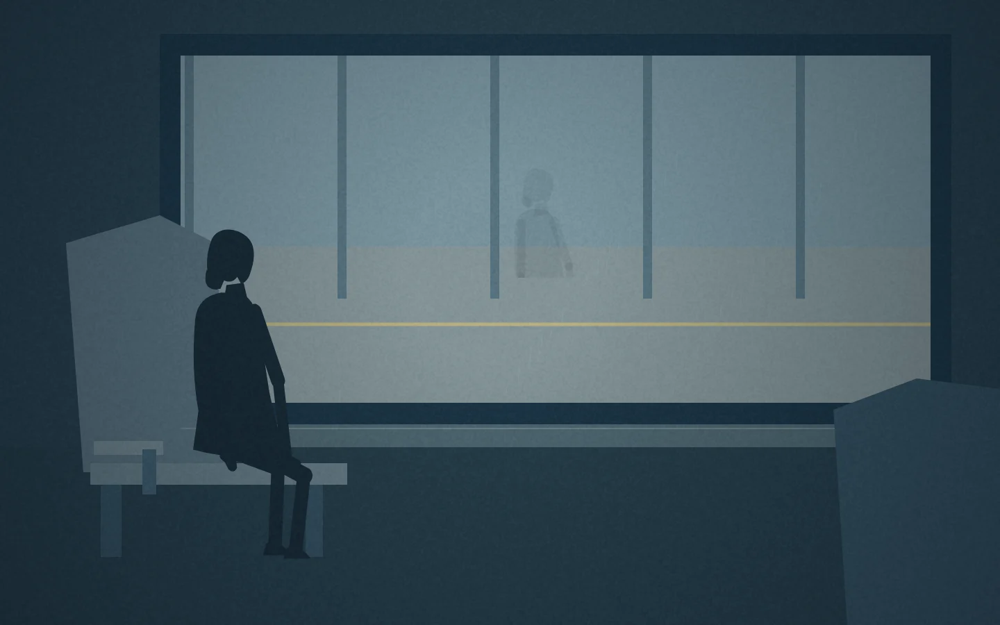

里面有人
从原创小说，到互动体验。
我把自己的小说转化为画面、声音和少量交互，探索故事的另一种呈现方式。制作中，我负责叙事与体验判断，并借助 AI 协作将它实现。
原创写作 · 体验设计 · AI 协作第一幕已上线 / 中英文

写作是我生活的一部分。我想探索：当读者需要亲手完成一点什么，故事会产生怎样的体验？于是，我开始让文字的节奏成为画面的停留，让少数动作参与叙事。
让观众的动作，接住人物正在做的事。
第一幕结尾，两个人正在教室里各自收拾桌面。早期版本却切回车窗，让观众拖动反光完成转场。试看时，我发现这个操作离开了正在发生的事。

把交互留在教室，沿女主收拾桌面的动作推近笔记本，让观众完成她已经开始的动作。封面合拢，也成为这一段故事结束的时刻。
把一个设计决定，变成可执行的要求。
我在 ChatGPT 中推敲叙事与交互，在 Codex 中推进原型实现。由我确认取舍，通过交接稿与标注截图同步决定，再回到实际版本检查。合笔记本就是其中一次具体的往返。
试看发现问题
我指出教室场景与车窗操作之间的断裂。
确认修改方向
我确认保留教室，让合上笔记本承接人物的动作。
交接具体要求
我把场景、操作和转场要求同步给 Codex。
合拢到位 → 继续
检查实际版本
Codex 实现后，我检查动作、时机和衔接。
我负责体验目标、方案取舍、参照与反馈，以及结果是否达到意图的判断。
AI 协助讨论方案、整理交接材料、代码实现、运行检查与发布。
音乐退下去，安静才能成立。
我希望看手机时观众能静下来，为舞会触颈处音乐的重新进入留出空间。音乐退场本身，也需要自然的衔接。
约 5.8 秒退场，由脚步、开门和环境声接住。
保留环境的存在感，让观众留意“什么都没有”。
另一首配乐进入，让回忆有不同的听觉温度。
展开：为什么调整音乐方案
早期短钢琴循环及后续的稀疏编配未达到我想要的效果。我调整路径，要求寻找许可明确的成品音乐。试听 Scott Buckley 的 Reverie 和 Moonlight 后，再决定它们与画面的配合，并将便利店退场从约 1.8 秒延长至约 5.8 秒。Codex 协助查找资源、处理音频与检查播放。
使用的工具与技术
ChatGPT / Codex
我用 ChatGPT 讨论设计，用 Codex 推进实现；由我组织已确认的要求、提供参照并判断结果。AI 协助提供方案、整理交接材料、编写代码与检查。
HTML / CSS / JavaScript / Canvas
Codex 实现网页布局、用代码绘制场景、动画、字幕时序与拖动交互；我定义并检查视觉和交互要求。
Web Audio API / FFmpeg
Codex 处理拟音、同步、音频剪辑、淡入淡出与保持音高的倍速版本；我试听并决定选曲、音量和时机。
Git / GitHub Pages
Codex 操作版本管理、独立分支和网页发布；我提出交付要求，并检查上线后的体验。
Playwright / Chromium
Codex 执行语言、时序、布局、交互和音频信号的浏览器检查，并生成实际截图。
先从第一幕开始。
中英文 · 字幕、声音与交互
其余章节待续，目前没有录制旁白。